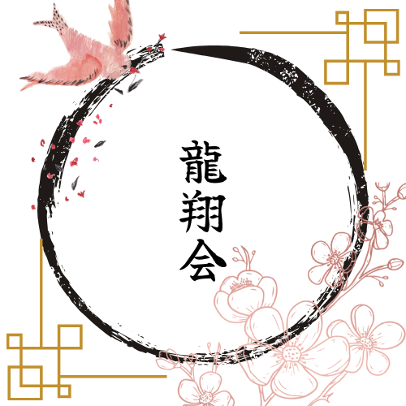

MESSAGE FROM RYUSYOKAI // 正射必中
RYUSYOKAI // 茨城県弓道連盟 龍ヶ崎支部
正射必中 // SEISHA HITCHU
一射絶命 // ONE ARROW ONE LIFE
礼に始まり礼に終わる // ETIQUETTE & DISCIPLINE
射法八節 // EIGHT STAGES OF SHOOTING
近的 二十八米 // 28M PRECISION
TRADITIONAL JAPANESE ARCHERY // RYUSYOKAI KYUDO CLUB
RYUSYOKAI // 茨城県弓道連盟 龍ヶ崎支部
正射必中 // SEISHA HITCHU
一射絶命 // ONE ARROW ONE LIFE
礼に始まり礼に終わる // ETIQUETTE & DISCIPLINE
射法八節 // EIGHT STAGES OF SHOOTING
近的 二十八米 // 28M PRECISION
TRADITIONAL JAPANESE ARCHERY // RYUSYOKAI KYUDO CLUB
SECTION DIRECTORY
DOJO PORTAL
HALL OF KYUDO

// 01 • EDUCATION
初心者教室
初めての方も安心。礼法・弓具の扱いから射法八節の基本まで丁寧にご案内します。

// 02 • CALENDAR
スケジュール
月間の道場稽古日、県連行事予定、中央審査会・全国大会の年間日程表。

// 03 • TOURNAMENTS
大会・審査要項
令和8年度・7年度の大会実施要項、関東地域連合審査会案内、参加申込書等。

// 04 • HONORS
大会・審査成績
会員の段位認許・昇段審査合格速報、各種弓道大会における入賞・的中記録。

// 05 • MEMBERS
会員専用
総会議事録、支部内連絡事項、大会出席簿・登録手続きのご案内。

// 06 • CONTACT
お問い合わせ
稽古見学のお申し込み、入門相談、弓道場へのアクセス情報・フォーム。
THE CORE DISCIPLINE
正射必中 // SEISHA HITCHU
「礼に始まり、礼に終わる」。
弓を引くことは、自己の心と向き合い、無念無想の静寂へと至る修養の道。
龍翔会は、古の精神と現代の求道が交差する、茨城県龍ヶ崎市の伝統武道拠点です。
DOJO PROFILE & SPECIFICATIONS
龍翔会 スペック
AFFILIATION
茨城県弓道連盟 龍ヶ崎支部
DOJO FACILITY
龍ヶ崎中学校 弓道場 (近的28m)
PRACTICE DAYS
毎週 火・木・土 & 第1/3日曜
ADMISSION & VISIT
見学・入門 随時受付中